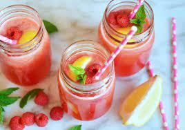

Pink Lemonade Recipe

Description
The combination of sweet raspberry juice and tart citrusy lemon makes this delicious drink the perfect choice for cooling off in the Texan heat!
And not only is this drink tasty - it's easy to make, too! Just follow the recipe below to make your own great batch of pink lemonade!
Ingredients
-
1 + 1/2 Cup
Fresh Raspberries
-
1/4 Cup
Maple Syrup
-
4
Lemons
-
5 Cups
Cold Water
Steps
-
Add the fresh raspberries straight into a saucepan along with the maple syrup.
-
Place the saucepan on the stove and bring to a gentle simmer.
-
Let the saucepan heat for a few minutes to soften, then grab a spatula and mash the raspberries to extract the juice.
-
Let the saucepan heat for another couple of minutes.
-
Remove the saucepan from the stove.
-
Place a strainer over a large bowl and pour the saucepan mixture through.
-
Once the mixture in the large bowl has cooled off, add the juice from the lemons.
-
Add the cold water into the large bowl.
Voila! Your pink lemonade is ready! Enjoy in a nice tall glass with some ice cubes and slices of lemon for garnish.